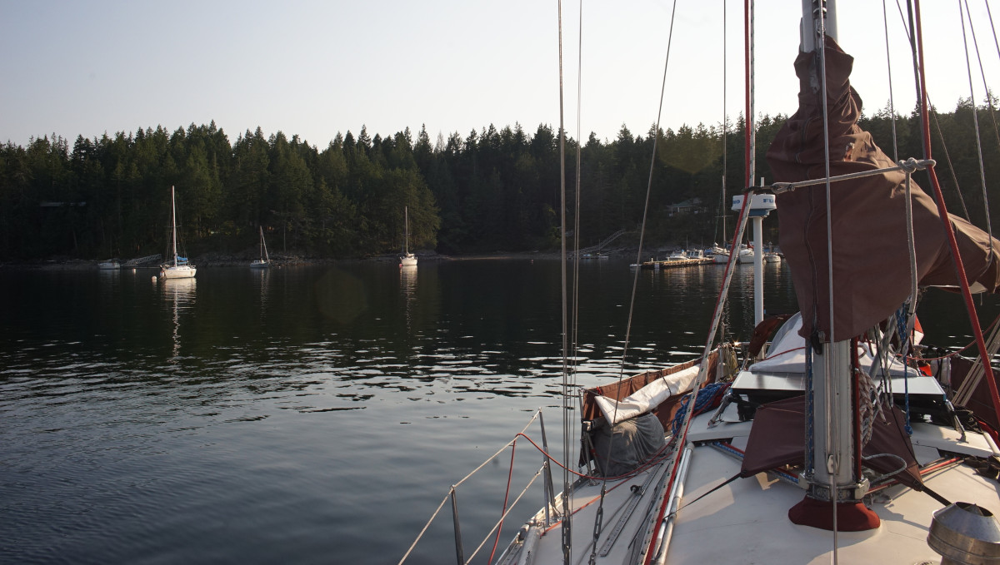
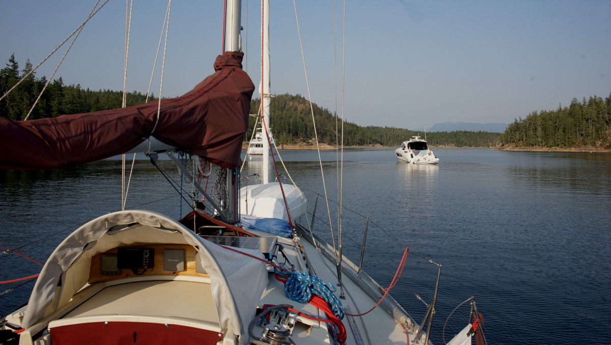

cortes bay

What we refer to on this page as Cortes Island is the traditional, stolen, unceded land of the Klahoose, We Wai Kum, and Homalco First Nations people.
We have long avoided anchoring in this bay. When first entering Desolation Sound both of us prefer to go somewhere a bit nicer. We have skipped it for the past 5 years, but on July 18th 2026 we stopped here after a re-supply run to Heriot Bay in hopes of getting a good internet connection before heading back into the land of little to no cell service. The last time we went to Heriot Bay, we went back north instead of south. This year, by going to Cortes Bay, we effectively circumnavigated the island for the first time.
The entrance to the bay is straightforward, it is necessary to pass south of the red marker to avoid a reef that dries at low tide, although floatplanes and small roundabouts make frequent trips through here so keep a lookout. Over the weekend, the floatplane must have come and gone at least 15 times.
The bay is home to both the RVYC and the Seattle YC, both docks were full of big white noisy icebergs when we arrived. We found a spot near the public dock, just ahead of the mooring field in about 50 ft (at high tide). Most of the boats on moorings occupy the better holding in mud, we had to anchor in rock, but the holding seems to be adequate. The wind blew out of the northwest at 15-20 knots for 2 nights, the sound kept us up, but we didn't budge. This bay has a reputation for having bad holding, but we're not certain if this is because people typically underscope, or because of their choice of anchor, there's no way to know, it may also depend on where you drop the hook, but if it bites down we don't see any reason for concern.

Cell service in here is very good, perfect for us to push project online, send emails, make calls, etc.
People advise against anchoring here in strong southeast winds, but we did not experience any. We did not go to shore, but apparently you can moor your dinghy at the public dock and walk on the road to a few hikes.
Cortes Bay is indeed not scenic, but it's not as bad a stop as we had expected.